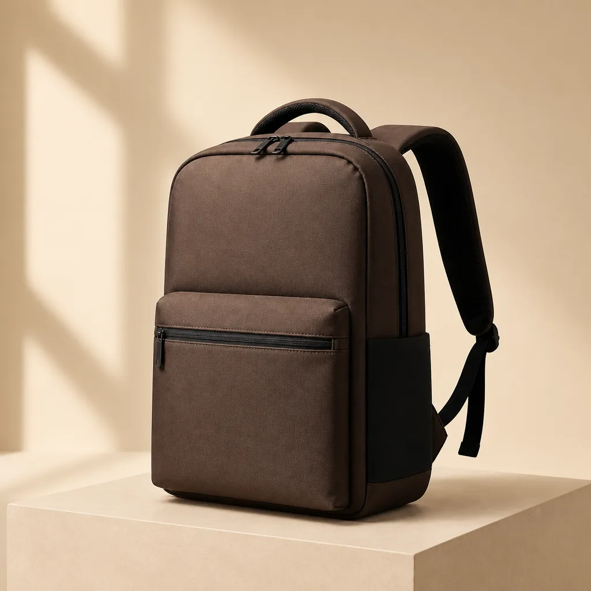

Most buyers start a backpack project with "something durable, not too heavy, around this price." That brief leaves a lot of room for interpretation. This guide gives you the vocabulary to turn it into a real spec.
What Denier Actually Tells You
Denier (D) is the weight of the yarn — 600D is heavier and typically tougher than 210D. But yarn weight is only half the story: weave density, coating and seam construction decide how a bag survives real life.
- 210D / 300D — lightweight linings, packable daypacks, compression bags.
- 600D oxford — the everyday sweet spot: commuter and school backpacks.
- 900D / 1200D — heavy commuter and travel use, stiffer hand feel.
- 1680D ballistics — luggage-grade weave, excellent abrasion resistance, higher cost.
Coating vs. Lamination
A PU coating makes fabric water-repellent and gives it body. TPU lamination is stronger and more waterproof but changes the hand feel and price. If your bag only meets light rain, a coated 600D saves money over TPU.
Rule of thumb: coated 600D for commuter bags, TPU-backed 900D for motorcycle and outdoor programs, and a tested water column spec whenever "waterproof" appears on your label.
Canvas: Weight Is Everything
Canvas is sold by ounce per square yard. 10–12 oz is a soft everyday tote; 16–18 oz holds structure for weekenders; 24 oz feels like a workhorse but gets heavy fast. Ask for a waxed or coated finish if you want water resistance without a synthetic look.
Recycled Fabrics Without Greenwashing
Recycled rPET oxford is now a mainstream choice with a real story to tell. Ask your factory for the recycled content percentage and, if you market it, GRS certification — otherwise the claim may not survive retail compliance.
PU Leather: A Trim, Not a Whole Bag
Full PU-leather backpacks look premium in photos but age faster on high-stress corners. We usually recommend PU on panels, handles and piping with nylon or canvas carrying the load — better durability, better price.
What to Send a Factory
- Use case and target retail price
- Shell preference: nylon, polyester, canvas or recycled
- Rain exposure: occasional, daily, or fully waterproof
- Weight limit for the empty bag
That is enough for us to shortlist three materials with swatches and a cost range — before any pattern work begins.